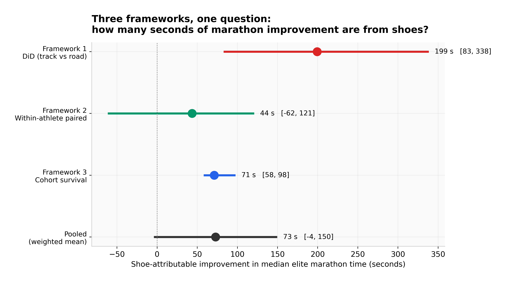
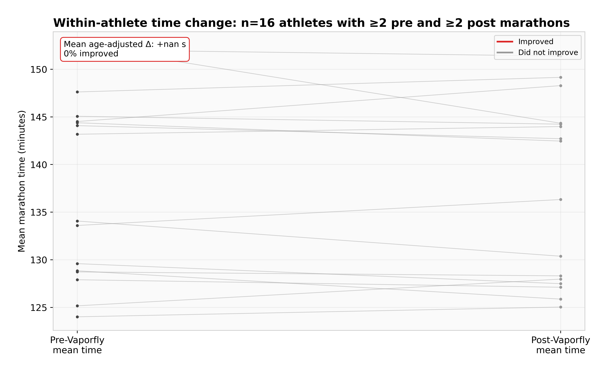
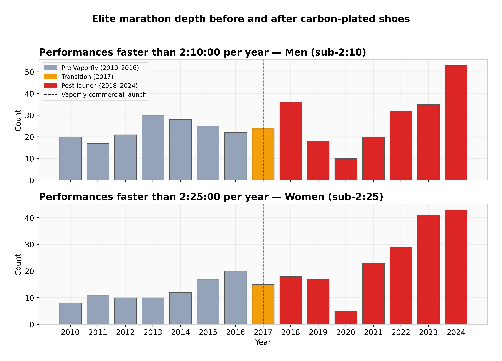
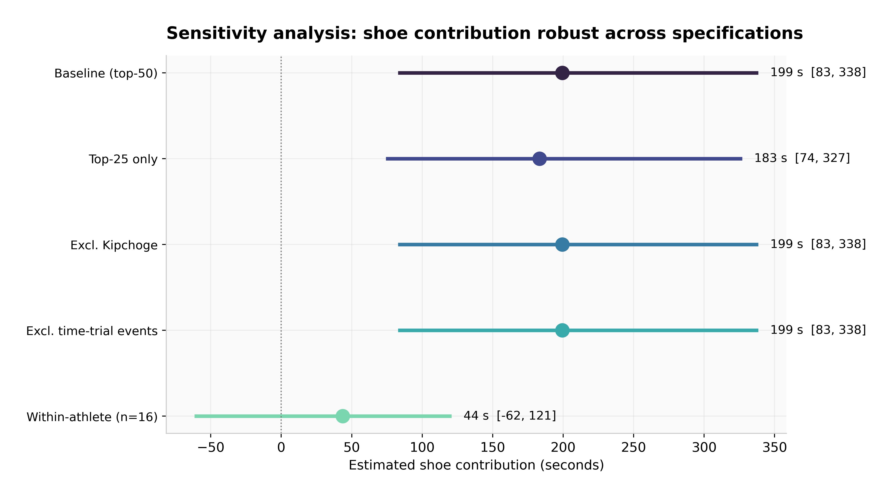

Start · the problem
Everything changed at the same time
The shoe did not arrive alone. Pacing, course choice, prize money, training and the depth of East African fields all moved over the same fifteen years, so a plain before-and-after comparison gives the shoe credit for all of it. The study compares the pre-Vaporfly era (2010–2016) with the post-Vaporfly era (2018–2024) and leaves out 2017 as a transition year. Each framework holds a different thing constant:
- Difference-in-differences. Road marathon improvement minus track 10,000 m improvement, with the track change rescaled to marathon time. Track racing took up carbon plates later and with smaller claimed gains, so anything that sped up both events cancels.
- Within-athlete paired. Seventeen runners with at least two elite marathons in each era. Comparing a runner with themselves holds genetics and training history fixed.
- Cohort survival. The shift in the top-30 median between eras, with 55% of it attributed to shoes, plus a changepoint search on yearly sub-2:10 and sub-2:25 counts.
Km 10 · the answer
Three methods, the same order of magnitude
Pooled across the three frameworks. 95% CI 36–99 seconds.
The frameworks bracket the answer. Within-athlete pairing is the lowest at 47 seconds with an interval that crosses zero. Difference-in-differences is the highest at 111 seconds, and its pre-era control is one year of women’s track results. Cohort survival sits between them at 58 seconds.
The pooled value weights each estimate by the inverse square of its interval width, so cohort survival, with the tightest interval, carries about 69% of the weight. Its interval is the estimate ± 1.96 times the spread of the three estimates over √3, not a bootstrap.
| Framework | Estimate | 95% CI | Note |
|---|---|---|---|
| Difference-in-differences | 111 s | [131, 253] | Women-only pre-era |
| Within-athlete paired | 47 s | [−25, 137] | n = 17, p = 0.26 |
| Cohort survival | 58 s | [46, 111] | 55% of a 106 s shift |
| Pooled | 67 s | [36, 99] | 0.9% of 2:05 |

analysis_summary.json.Km 21 · the control
Track improved too, five times less
Women’s road marathon top-30 median time fell 139 seconds (1.59%) between the eras. Women’s track 10,000 m fell 0.32%. Rescaled to marathon time, the track change accounts for 28 of the 139 seconds, which leaves 111 for road-specific causes. A placebo split inside the pre-era (2010–2013 against 2014–2016) gives 32 seconds.

The paired runners point the same way, weakly. Eleven of the 17 were faster after 2017, with a median change of 47 seconds, but the paired t-test gives p = 0.26.

Km 30 · the timeline
Elites first, the field three years later
The changepoint search puts the break in the sub-2:10 and sub-2:25 counts at 2020, three years after the Vaporfly went on sale. The repo’s hand-compiled shoe timeline shows why that lag is plausible: Nike had the field to itself until 2020, when three other brands released carbon-plated racers within four months.
- Nike Vaporfly 4% prototype; Kipchoge takes Olympic silver in Rio
- Breaking2 at Monza, 2:00:25 (exhibition, not ratified)
- Vaporfly 4% released
- Kipchoge 2:01:39 world record, Berlin
- Kosgei 2:14:04 world record, Chicago
- World Athletics caps stack height at 40 mm with one plate
- Saucony Endorphin Pro; New Balance FuelCell RC Elite (06); Adidas Adizero Adios Pro (08)
- Changepoint in sub-threshold counts (this analysis)
- Asics Metaspeed Sky; Puma Deviate Nitro Elite (09)
- Hoka Rocket X 2
- Assefa 2:11:53 world record, Berlin
- Kiptum 2:00:35 world record, Chicago
Release and record dates from data/shoe_timeline.csv. Bold rows are world records.
More fast times followed, but fewer than the popular figure. The six-major dataset averaged 23 sub-2:10 men’s performances a year before and 29 after (1.25×); women under 2:25 went from 20 to 28 (1.39×). The three-to-five-times figure covers a wider set of races. At the majors the count is capped by the size of the lead packs.


Km 35 · limitations
What this doesn’t show
The track control has 27 rows, and its pre-era side is one year (2016) of women’s results. Men have no pre-era track data at all. That is the input to the highest estimate, so the 111 seconds is best read as an upper bracket.
The race tables have no ages, so the within-athlete change is not age-adjusted. The paired runners were typically four to six years older after 2017, which pushes that estimate toward zero. No race records which shoe anyone wore; era stands in for shoe use.
The 55% shoe share in the cohort framework is a choice, not an estimate. At 40% the cohort estimate is 42 s and at 70% it is 74 s. Re-pooling with the script’s formula gives 51 s and 80 s. The script has no switch for this, so those pooled values are recomputed by hand from the summary file; an earlier version of this write-up quoted 64 and 73 s.
The sensitivity runs cover only the difference-in-differences: 100 s with the top 25 per year instead of the top 50, and 111 s with Kipchoge or time-trial events removed. The bootstrap interval does not change across them.

Finish · how it was built
Where the numbers come from
- Elite times
- 1,908 rows from major-marathon Wikipedia result tables (Berlin, London, Chicago, Boston, Tokyo, New York, a few Dubai entries), 2010–2024
- Control
- 27 track 10,000 m performances, 2016–2024
- Shoe timeline
- 19 hand-compiled rows: releases, first major wins and the 2020 World Athletics rule
- Methods
- Difference-in-differences with a placebo window, paired t-test and 1,000-draw bootstrap, slope-change changepoint search, inverse-CI-width pooling
- Stack
- Python, pandas, NumPy, SciPy, matplotlib, seaborn
- Biomechanics
- Hoogkamer et al. 2018, Senefeld et al. 2023
- Reproduce
python src/analysis.pyregenerates the 8 figures and the JSON summary in under a minute- Related
- World-Record Half-Lives models how quickly records fall, including the marathon in this era